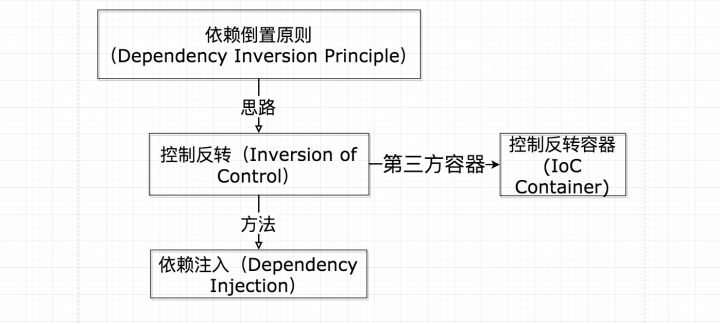

# 你需要知道的依赖注入
# 前言
本人平时学习及收集内容，欢迎参入一起讨论。
# 内容
# 一、依赖注入的前置知识
要了解依赖注入，必须得先知道以下知识点。
# 1.1 依赖倒置
依赖倒置（Dependency inversion principle，缩写为 DIP）是面向对象六大基本原则之一。它是指一种特定的形式，使得高层次的模块不依赖于低层次的模块的实现细节，依赖关系被颠倒（反转），从而使得低层次模块依赖于高层模块的需求抽象。
该原则规定：
- 高层次的模块不应该依赖于低层次的模块，两者都应该依赖于抽象接口。
- 抽象接口不应该依赖于具体实现。而具体实现则应该依赖于抽象接口。
上面这两句话很抽象，需要细细品味才能发现其中奥秘，如果暂时理解不了也没关系，下文会结合具体案例帮助大家理解。
# 1.2 控制反转
控制反转（Inversion of Control，缩写为 IOC）是面向对象编程中的一种设计原则，用来降低计算机代码之间的耦合度。是实现依赖倒置原则的一种代码设计思路。其中最常见的方式叫做依赖注入，还有一种方式叫依赖查找。
# 1.3 依赖注入
依赖注入（Dependency Injection，缩写为 DI）是实现控制反转的一种方式。常用的依赖注入方法有 3 种：
- 接口注入
- 构造函数注入
- 属性注入
# 案例介绍
在了解了相关理论之后，接下来我们通过案例来理解一下依赖注入。
常用的后端架构可以分为 3 层：
web 层
- 接收前端请求，处理请求参数，匹配后端路由，调用对应的 service 层处理业务。
service 层
- 接收 web 层的参数，处理业务逻辑，如果需要读取数据，会调用 database 层。
database 层
- 处理数据库相关的层，负责连接数据库，以及常用的增删改查方法的封装。
接下来我们通过非依赖注入，依赖注入，依赖注入容器这 3 种思路，搭建一个简单的后端 3 层架构。
# 二、非依赖注入的开发模式
非依赖注入的开发模式很符合常规逻辑，即：web 层依赖 service 层，service 层依赖 database 层。
案例如下：
class Database{
select(sql){
const mysql = require('mysql');
return new Promise(resolve=>{
// 连接数据库，并执行sql语句进行查询
mysql.createConnection().query(sql,(error,results,fields)=>{
const success=resultes.length>0?true:false;
resolve(success);
});
});
}
}
class Service{
async login(username,password){
const db=new Database();
const success=await db.select(
`select * from user where username=${username} and password=${password}`
);
return success ? '登录成功' : '登录失败';
}
}
class Web{
matchRouter(path){
switch(path){
case 'login':
const service = new Service();
const {username,password} = path.query;
return service.login(username,password);
}
}
}
// 使用web层
const web=new Web();
web.matchRouter('login');
2
3
4
5
6
7
8
9
10
11
12
13
14
15
16
17
18
19
20
21
22
23
24
25
26
27
28
29
30
31
32
33
34
35
36
37
38
上面的代码是典型的高层模块依赖低次模块案例。web 层依赖 service 层，servie 层依赖 database 层。
非依赖注入开发模式的优缺点：
- 代码复杂度低，逻辑清晰，使用方便，直接 new 最上层的模块就行了。
- 不利于维护，如果底层（database 层）修改了 select 方法的传参方式，上层（service 层和 web 层）也必须同步修改调用方式。
- 不利于测试，各个模块耦合在一起，要单独测试 web 层是不行的，因为它内部引入了 service 层和 database 层，只能当成一个整体测试。
# 三、依赖注入的开发模式
如果把上面的案例改造成依赖注入的方式也很简单，删除内部依赖关系，将需要的依赖通过构造函数注入就行了。
class Database{
select(sql){
}
}
class Service{
constructor(db){
}
async login(username,password){
}
}
class Web{
constructor(service){
}
matchRouter(path){
switch(path){
case 'login':
}
}
}
// 使用web层之前，必须手动创建依赖，并注入
2
3
4
5
6
7
8
9
10
11
12
13
14
15
16
17
18
19
20
21
22
23
24
25
26
27
28
29
上面的代码可以看出，web 层并不直接依赖 service 层，而是通过构造函数将 service 传进来直接用，这就实现了依赖注入的效果。
依赖注入开发模式的优缺点：
- 代码复杂度低，逻辑清晰，使用较复杂，需要手动注入依赖。
- 便于维护，代码耦合度低，各个模块互不依赖。
- 使用测试，不同模块之间可以单独的进行单元测试。
# 四、依赖注入的容器的开发模式
如果使用上面的安全，每一次使用都需要手动传入依赖，当依赖太多时，也会造成难以维护的问题。我们可以在一个地方统一进行依赖注入，即在一个依赖注入容器里。
一个简单的依赖注入容器如下：
// ioc.js
export default function createIoC(){
const iocMap=new Map();
return {
bind(key,callback){
iocMap.set(key,{callback});
},
use(key){
const {callback}=iocMap.get(key);
return callback();
}
};
}
2
3
4
5
6
7
8
9
10
11
12
13
14
在统一的配置文件中配置依赖关系。
// ioc-config.js
import createIoC from 'ioc.js';
const ioc = createIoC();
// 手动绑定依赖关系
ioc.bind('Database',()=>{
return new Database();
});
ioc.bind('Service',()=>{
const database = ioc.use('Database');
return new Service(database);
});
ioc.bind('Web',()=>{
const service = ioc.use('Service');
return new Web(service);
});
export default ioc;
2
3
4
5
6
7
8
9
10
11
12
13
14
15
16
17
18
19
20
21
使用容器注入依赖
import ioc from 'ioc-config.js';
// 使用web层
const web = ioc.use('web');
web.matchRouter('login');
2
3
4
5
6
上面代码使用 IOC 窗口来进行依赖注入，优缺点如下：
- 代码复杂度较高，逻辑较复杂，使用方便，要什么就注入什么就行了。
- 便于维护，只需要在一个地方（ioc-config.js）定义依赖关系，这个文件可以抽离出来作为单独的配置文件，实现数据驱动。
- 便于测试，不同模式之间可以单独的进行单元测试。
# 五、总结
- 依赖倒置是面向对象的基本原则。
- 控制反转是实现依赖倒置原则的一种代码设计思路。
- 依赖注入是实现控制反转的一种方式

本文通过非依赖注入，依赖注入，IOC 容器这 3 种开发模式来分析了依赖注入的开发方式。加深了笔者对依赖注入的理解，希望通过这个案例能让更多的同学弄懂依赖注入。
# 参考资料
# 联系作者
平凡世界，贵在坚持。

← 观察者模式和发布订阅模式的区别 函数式编程 →